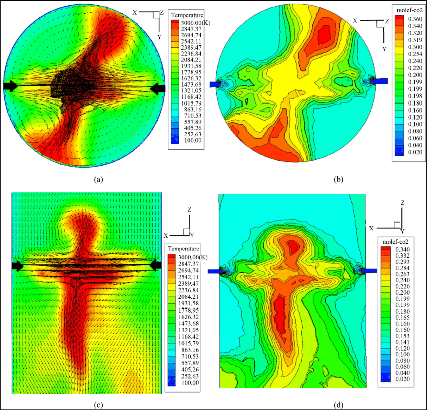

Throughout my work in Computational Fluid Dynamics, I have come across numerous data visualizations of certain physical quantities. The most common quantities that are visualized are the temperature, velocity and the flow (direction) distribution of any medium. One of the interesting phenomenon I studied is the vortex shedding of a water flow through a hot cylindrical obstacle. Placing an obstacle in an undisturbed flow, causes the water stream to split up and merge behind the cylinder. But, having a hot cylinder causes the formation of vortices (circular shaped entities) behind the water that merge in an alternating fashion. This phenomenon is clearly shown in a simulation video, where the colors are used to show the temperature (red being hot, blue being cold, and black being the temperature of water that isn't affected by the hot cylinder). A static image would be really difficult to comprehend for a novice, so this animation really explains the effect from the start of the flow disturbance. This visualization is not perfect, as it fails to mention the direction of flow of liquid. The visualization also assumes the black color to be the lowest temperature instead of blue, which goes against the intuition.
This data visualization becomes even more insightful when it is backed up by experimental evidence as shown below:
Bad data visualization is really common in Computational Fluid Dynamics, since the domain is usually 3 dimensional in nature and there are multiple parameters that vary (velocity, temperature, and pressure). One of the variables, velocity, being directional in nature requires both magnitude and direction to be shown in the plot. The figure shown the flow and temperature of a gas inside a cyclinder. The visualization shows both temperature and velocity magnitudes on the same plot, which makes it difficult to interpret the magnitude of velocity. It also has unclear representation of the velocity vector (which has both magnitude and direction) which makes the visualization cluttered as shown in the part(a) of the figure shown below.
